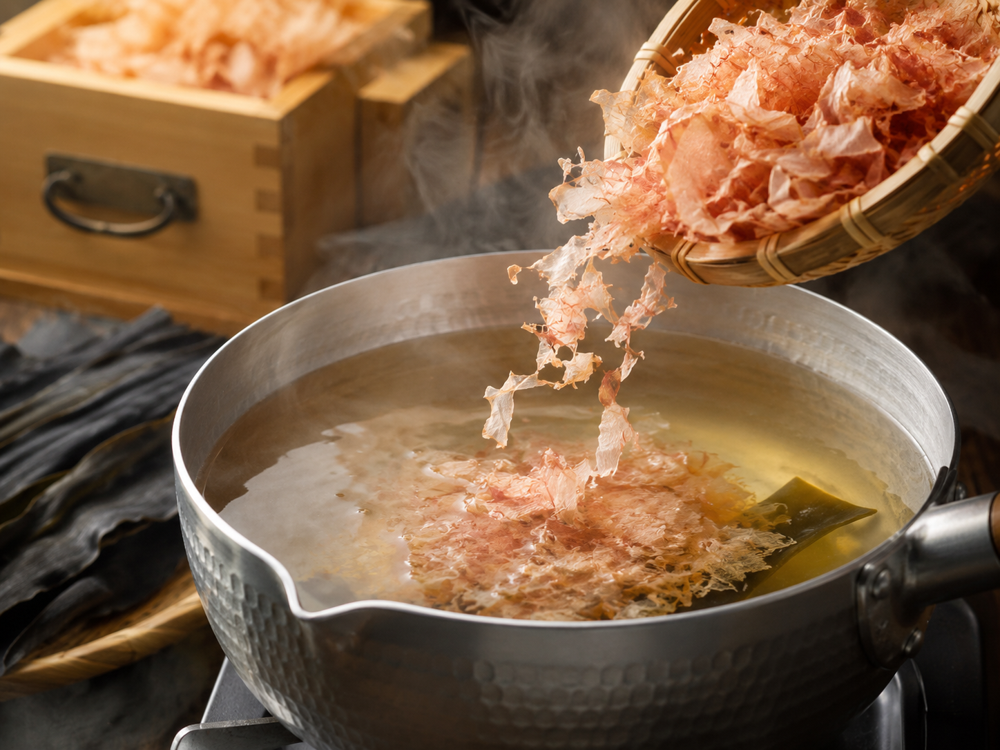

こだわりCraftsmanship
職人歴十数年、一杯に宿る手仕事。
16歳で飲食の道に入った店主・牛田和男が、うどん職人として十数年磨いた技で一杯ずつ仕上げます。飲んだ後でもするりと入る、あっさりとした味付けが身上です。

十六歳、味ひとすじ
Dashi
自家製の出汁
数種類のかつお節をブレンドし、毎日店で引く自家製スープ。澄んだ一番出汁の香りが、最後のひと口まで続きます。
Men
選べる、細麺と太麺
出汁をまとってするりと喉を通る細麺と、もちもちと食べ応えのある太麺。お好みと気分で選べます。注文を受けてから釜で茹で上げる、できたての一杯をどうぞ。
店舗案内Access

| 店名 | 酒処 かずおうどん |
|---|---|
| 住所 | 〒866-0861 熊本県八代市本町1-3-30 |
| 電話 | 090-2089-8822 |
| 営業時間 | 18:00〜翌2:00 |
| 定休日 | 日曜日・祝日 |
| アクセス | JR八代駅から車で約5分（本町アーケード内） |
| 予約 | 電話にて受付 |